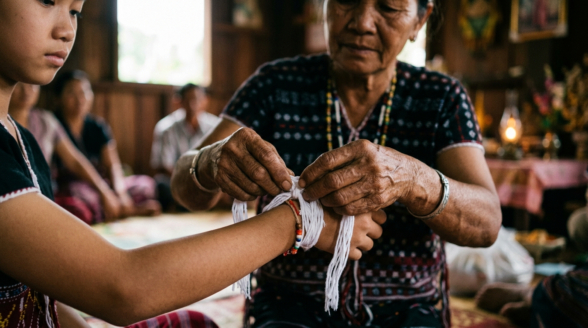
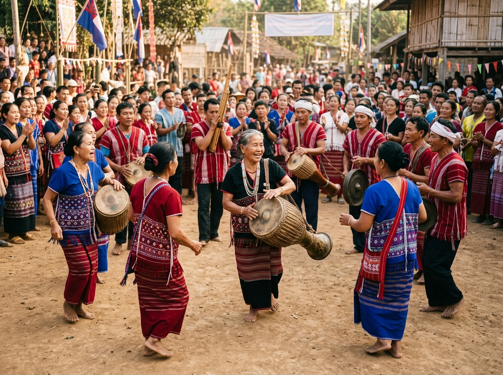
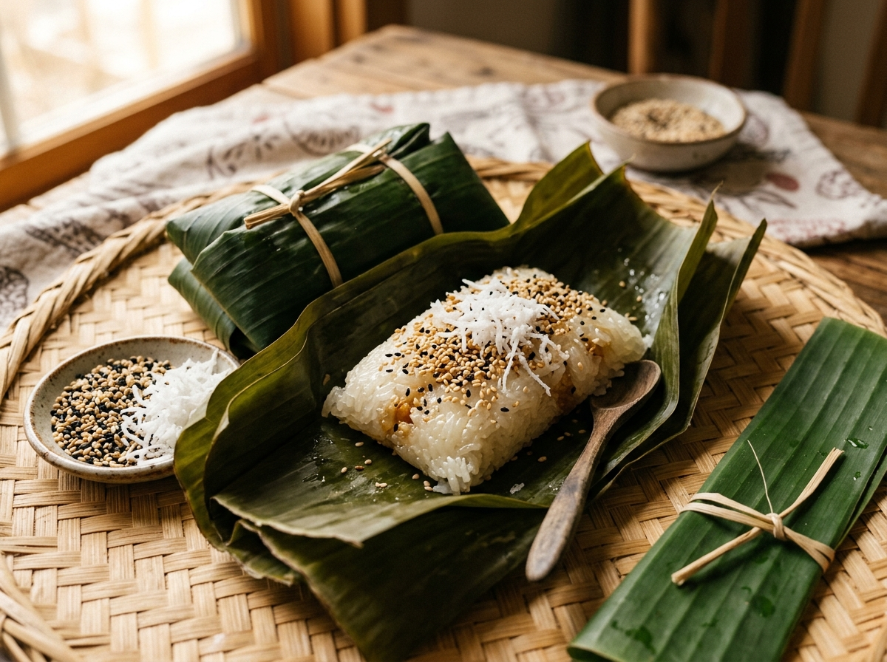
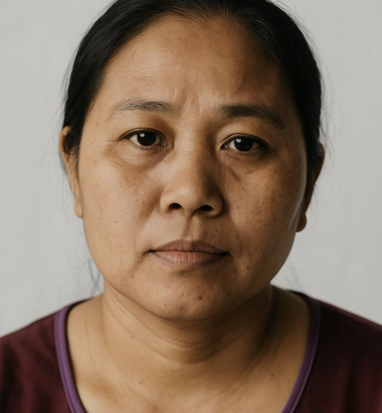
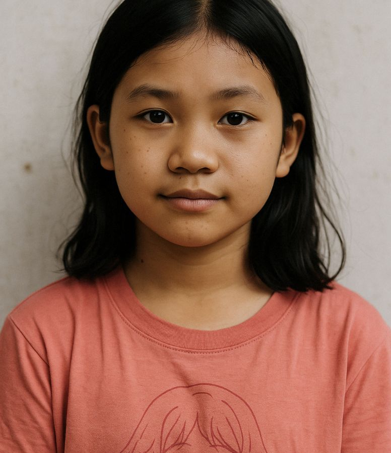

THE KAREN ODYSSEY
From the Mountains of Myanmar to the American Midwest
Before You Read: What Do You Think?
Look at the photo above and think about these warm-up questions before reading. Talk with a partner or write your thoughts!
Where do you think this village is? What clues do you notice in the scenery?
What does the word "refugee" mean to you? Have you ever met someone from another country?
Why might a family need to leave their home country and start over in a new place?
Key Vocabulary: Learn Before You Read
Click 🔊 to hear the native pronunciation, then review the meaning and example sentence.
Meaning: The country where a person or their family was born.
"Myanmar was the Karen people's homeland for generations."
Meaning: A person forced to leave their country because of war or danger.
"Many Karen refugees lived in safe camps in Thailand."
Meaning: A custom or special activity passed down through generations.
"The wrist-tying ceremony is a sacred family tradition."
Meaning: To move to a new country and start a fresh life.
"Karen families were given opportunities to resettle in America."
Meaning: A group of people who support and care for each other.
"The Karen community in Milwaukee built shared city gardens."
Meaning: To enjoy a special holiday or happy event together.
"Every August, families gather to celebrate the Lah Poh ceremony."
Meaning: The language, food, clothing, and arts of a group of people.
"Students proudly share Karen culture with their new classmates."
Meaning: A formal event with special actions done in a meaningful order.
"During the wrist-tying ceremony, white threads are tied for good health."
Meaning: A long trip or important life experience over time.
"Their long journey took them from mountain villages to America."
Meaning: Bravery and strength when facing difficult situations.
"It takes great courage to learn a new language and adapt to a new city."
Meaning: The time when crops like rice and vegetables are gathered.
"The Karen New Year is celebrated right after the rice harvest."
Meaning: To help, encourage, and take care of other people.
"Neighbors helped support new families as they settled in Wisconsin."
Read & Listen: The Karen Story
Part 1 · Life in the Mountains of Myanmar
The Karen people are a cultural community from eastern Myanmar. For generations, they lived in peaceful mountain villages surrounded by green forests and flowing rivers. They grew rice on hillsides, wove beautiful red and blue cotton clothes, and built strong bamboo houses. Every August, Karen families celebrated their special Wrist-Tying Ceremony called Lah Poh. During this ceremony, parents tie white cotton strings around their children's wrists to bring good health, unity, and protection.
Part 2 · The Journey to Thailand
Unfortunately, serious fighting and war began in Myanmar. Many Karen families had to leave their farms and walk for days through the jungle to reach safety in Thailand. In Thailand, they lived in large refugee camps such as Mae La. Life inside the camps was simple, and families could not leave the camp grounds. However, teachers set up community schools in bamboo huts so children could learn English, Karen, and mathematics. Many families lived in these refugee camps for more than ten years.
Part 3 · A New Beginning in America
Eventually, thousands of Karen families received opportunities to move and start new lives in the United States. Many families moved to Midwestern cities like Milwaukee, Wisconsin. At first, the cold winter snow and English language were challenging for families from a warm country. But with strong community spirit, Karen elders planted traditional Asian vegetables in city gardens, while young students studied hard in school. Today, Karen youth graduate from universities and proudly share their culture with new American and international friends.

🧵 Lah Poh: Wrist-Tying Tradition
White cotton threads are tied around wrists to unite the family and bring blessing and health.

🎺 Karen New Year Celebration
Celebrated right after the rice harvest season with colorful hand-woven tunics, traditional bronze drums, and communal Don dances.
📍 3-Stage Journey
Grammar Spotlight: Past Simple for Storytelling
Story Examples:
"They grew rice on hillsides and built strong bamboo houses."
"Many families walked for days through the jungle."
"Teachers set up community schools in bamboo huts."
✏️ Quick Practice: Type the correct Past Simple form of each verb in parentheses.
Fill in the Blank: Practice Your Vocabulary
Choose the best word from the box to complete each sentence. Each word is used once.
Understanding the Story
Taste of Culture: What Would You Like to Try?
Click on the traditional Karen dish you would most like to taste, then write your reason below.
1. Tala Baw
Hearty bamboo shoot & wild herb soup with ginger, garlic, and greens.
2. Crispy River Fish
Fresh river fish seasoned with turmeric, crispy garlic, cilantro & lime.

3. Coconut Sticky Rice
Steamed sweet rice in banana leaves with toasted sesame & coconut.
Let's Talk: Discussion Questions
Share your ideas with a partner or small group. Try to use vocabulary words from Section B!
If you had to move to another country tomorrow, what 3 personal items would you take with you? Why?
What is one important family or cultural tradition you celebrate every year? Describe it to your partner.
How can university students in Japan help international students and newcomers feel welcome?
Writing Task: My Reflection Paragraph
Complete the reflection paragraph below using your vocabulary and ideas from the unit.
The Karen people are a very community of people.
They had to leave their in Myanmar and make a long to safety.
One tradition I found inspiring was because .
If I could meet a Karen university student, I would .
The most important lesson from this story is that people can show incredible when they support each other.
Can-Do Checklist: CEFR B1 Self-Assessment
Check each statement when you feel confident. Track your progress across this unit!
Before Next Class: Meet 4 Karen People in America
In our next class, you will practice speaking with new Karen community members in America. Read these 4 short profiles, then try the matching game and conversation practice below!

Eh Kler (Age: 38)
Mother of two · Enjoys cooking & decorating
- 🏠 Story: Moved to America with her two children after leaving Myanmar.
- 💼 Job: Works at night cleaning hotel rooms to support her family.
- 🍲 Cooking: Loves cooking Asian food, but doesn't know where to buy Asian ingredients.
- 🍰 Curiosity: Loves sweet American desserts and wants to learn how to bake cookies.
- 🛋️ Goal: Wants to decorate her new apartment to make it nice and cozy for her kids.
Law Mu (Age: 50)
Father of four · Skilled painter & fisherman
- 🏠 Story: Came to America with his wife and four children.
- 🎨 Skills & Job: Good at painting houses, but works two dishwashing jobs late at night.
- 🚌 Challenge: Walks everywhere because he doesn't know how to use the city bus.
- 🐟 Hobby: Loves fishing, but doesn't know where to buy gear or find good fishing spots.
- 🤝 Goal: Wants to practice English so he can find steady daytime work.
Dee Ku (Age: 16)
High school student · Soccer fan
- 🏠 Story: Born in Mae La refugee camp in Thailand. Has never seen Myanmar.
- 👕 Style: Born female, but identifies as a teen boy and likes to dress in boy clothes.
- ⚽ Passions: Loves soccer and dreams of joining a school soccer team.
- 📚 School: Speaks some English, but class English is fast and difficult.
- 🥪 Challenge: Sits alone at the lunch table and wants to make American friends.

Moo Shee (Age: 13)
Middle schooler · Anime & math whiz
- 🏠 Story: Born in America to Karen refugee parents.
- 🎨 Hobby: Big fan of Japanese anime and manga; loves drawing characters.
- 🧮 School: Very good at math, but English reading and writing is hard.
- 👗 Challenge: Feels shy about wearing secondhand clothes to school.
- 🌟 Goal: Wants to make friends who also love art and drawing.
Matching Game: Who Is It?
Read each clue and tap the correct person's name!
1. “This person is 16 years old, loves soccer, and sits alone at lunchtime.”
2. “This person loves fishing and walks everywhere because the bus map is confusing.”
3. “This person is 13 years old, is great at math, and loves drawing Japanese anime characters.”
4. “This person cleans hotel rooms at night and wants to learn how to bake American desserts.”
Choose 2 Great Conversation Starters
For each person, choose the 2 best, friendliest things to say. Two choices are great, and two choices are not good. Check your answers to see why!
Talking to Eh Kler (38)
Pick the 2 kindest and most helpful things to say:
Talking to Law Mu (50)
Pick the 2 kindest and most helpful things to say:
Talking to Dee Ku (16)
Pick the 2 kindest and most helpful things to say:
Talking to Moo Shee (13)
Pick the 2 kindest and most helpful things to say: